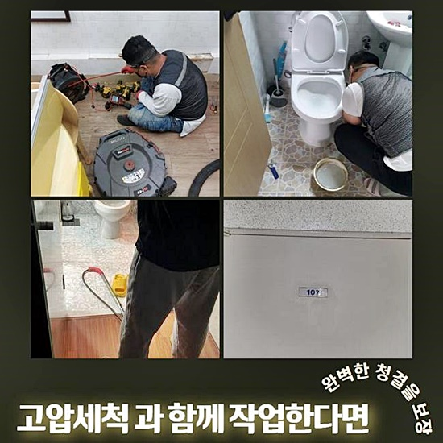
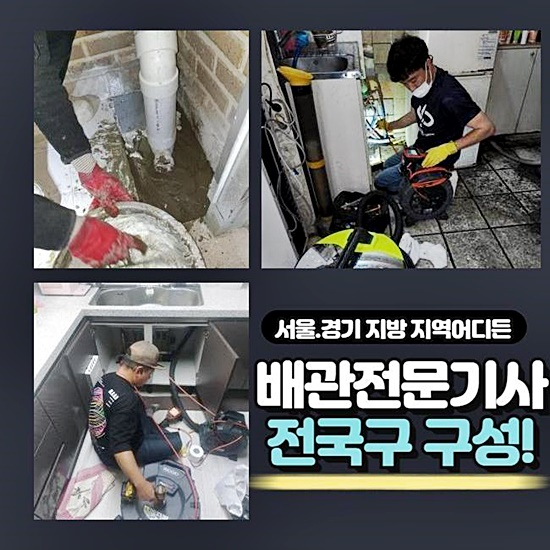
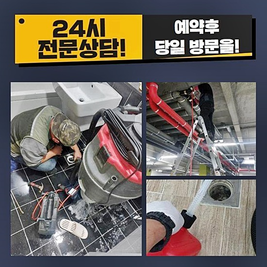
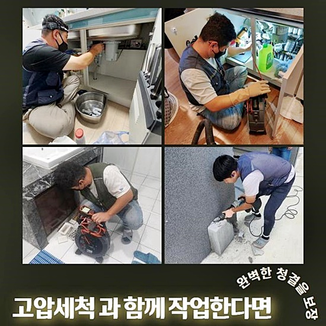
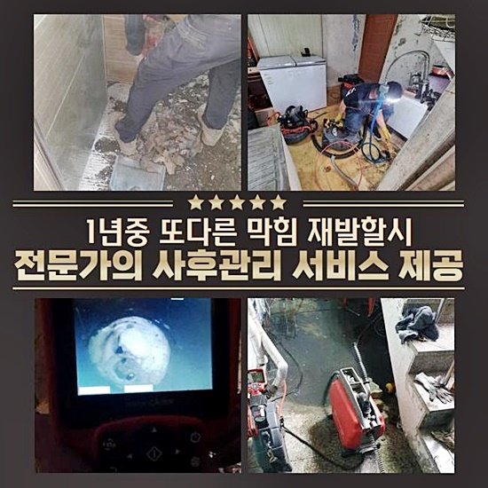
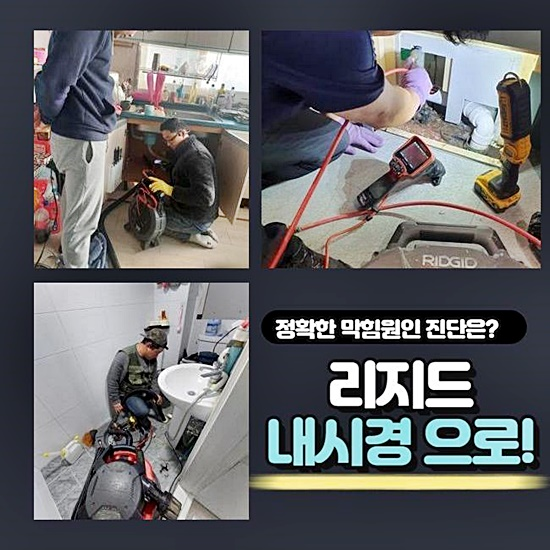
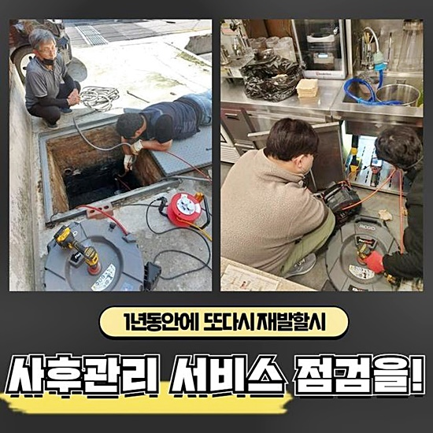

🏠 강북 삼양동씽크대뚫음 송중동 하수구청소장비 통수전문
용인시 처인구 배관막힘 전문 시공 후기

📋 작업 개요
- 위치: 용인시 처인구, 수원시 영통구, 화성시 동탄
- 서비스 유형: 배관막힘, 하수구청소, 내시경점검
- 작업 일시:
- 업체명: 하수구수사대 (010-5615-2118)
🔍 문제 상황
강북 삼양동씽크대뚫음 송중동 하수구청소장비 통수전문
일반 생활을 영위하며 씻고 먹는 행위 등 많은 영역에서 물이 부족하면 곤란할 정도로 수돗물을 막대하게 소비합니다
다쓴 물을 배수구로 이동시키는 절차 속에서 특정한 배수구의 고장으로 물이 나가야할 곳에서 오히려 역행이 일어나거나 타일이 온통 하수범벅이 되는 불의의 사고가 생겨서 상당한 불편감을 얻죠
하수구가 봉인될 경우 여러곳에 물을 대기도 걸림돌이 심각하고 역류로 인한 혼탁한 물웅덩이에서 퍼지는 냄새로인해 집 자체가 싫어집니다
쉽게 처리가능한 막힘 정도면 가루나 액상 클리너나 간단한 관통기로 압박하여 원활하게 막힌 측면을 수습하실 수는 있는있겠죠
고장이 난 배관의 일부가 추정 자체가 안되거나 상당히 어둡고 좁고 심층부에 속한다면 단순히 계획과 지식이 없는 조치로는 한계가 보이므로 업체의 지혜를 이용하는 식으로 해소하시면 좋습니다
오늘 작성할 글은 일반 주택의 하수구가 오류가 난 상황을 맡을 때 대체 어떤 접근법으로 구동이 전혀 안되는 배수로를 전략적으로 해소하는지 이야기해 보겠습니다
하수막힘은 통계적으로 모발과 흙같은 오염원으로 인하여 생성되곤 한답니다
이번에 인연을 맺은 의뢰인분의 댁은 연락주신 호실에서만 배수구 통행 장애가 생긴 것보다 진화된 상태였어요
전체적인 관로가 막혀서 샤워기를 틀게 되면 역류하는 불의의 사고가 생겨서 머무르는 모든 구성원에게 극심한 고통을 주는 상황으로 판별됐어요

🔎 원인 분석
💡 전문가 진단: 정밀 진단 장비를 사용하여 슬러지의 고착 여부를 판명하고 타격/세척 작업을 실시했습니다.
배수 차단이 되면 더러운 하수로 인해 생기는 악취 악취가 급격하게 확산되다보니 불편감을 야기하게 되는데다 시설의 정상적 사용에도 장애요인을 만듭니다
모든 호실에서 막힘이 일어난 상황이므로 좁은 가지 배관이 아닌 마당에 자리한 하수구와 연결되는 쪽의 진단이 더 의미있겠다 생각했어요
일단 검토에 들어가야 할 수도관이 설치된 지점을 알아내는 게 필요했으므로 관로 탐사용 레이더를 켜서 곳곳을 점검해 봤어요
본 장비는 배관 경로에서 남다른 변동이 생기면 나타나는 패턴이 있어서 배관이 배치된 장소를 확인해야 할 시 유익하게 쓰임새를 발휘합니다
호실마다 이어진 배관을 확실시 하고 나면 막힌 쪽을 뚫어내려 배수구 입구필터를 꺼내줬어요
물길이 아예 닫혔는지 확정하고 넘어가려고 내시경을 집수정 속으로 들여보낸 상태입니다
내면을 둘러보았더니 모든 세대에서 쓰는 배관 속에서 기름슬러지가 가득 끼어 있었습니다
슬러지는 각종 오일층의 서로 엉겨붙어서 밀집되는 물질입니다
일례로 부엌에서 기름량을 많이 쓰거나 식기를 씻는 과정에서 이 잔여기름을 배수구로 배출하면 물살에 휩쓸려가지 않고 하수랑 섞이지 못하고 떠버려요
작은 실수에서 시작됐지만 개별 가정의 범위를 넘어 건물 전체에 하수구 중단처럼 하수물이 폐기되지 못하고 고스란히 머무르는 사태가 빚어지게 된 상황이었네요

🔧 작업 과정
막힌게 확실시 됐으니 이물질로 붐비는 쪽을 뚫어버리는 절차가 필요하겠지요
저희업체는 슬러지 따위를 소거해 줘야 할 때 유연한 샤프트 장치를 적극이용하고 있는데요
이 기기를 돌려서 안쪽에서 들러붙어 있는 딱딱한 슬러지층을 깨고나서 삭제시켜주는 기기로 배관내부를 속속들이 조성하여 막힘을 극복해 주고 있어요
강력한 샤프트 기기를 무분별하게 돌린다면 멀쩡한 설비에도 상처가 새로운 문제로 부상하니 숙련공의 신중한 절차가 필요하겠지요
몸집이 불어난 찌꺼기를 잔잔한 입자로 만드니 까맣게 퇴색됐던 기름진 오염원들이 수로를 타고 청량하게 속전속결로 내려가는 것을 목도하게 되어 뿌듯했네요
중앙 시스템을 관리했으니 잘게 나뉜 소배관들을 살펴볼 때가 됐어요
배관들이 수렴되는 하수구에 오랫동안 막힘이 있었으니 실내의 화장실 배관도 덩달아 마비됐을테니 모든 집을 방문하여 슬러지의 소거가 빠져서는 안될 시기였어요!
거대한 배수로의 봉인을 해제해 줘도 작은 배관들도 마비되어 있는 경우라면 세대 화장실 문제는 고쳐지지 않는 게 일반적이니 당연히 작업이 들어가야 했죠
소거 절차는 당시의 컨디션에 따라서 적합하게 처리해 나간답니다
가정용 수도관 정비를 해주고 나니 야외 하수구에서 더욱 늘어난 질량의 슬러지가 운반되는 것을 직접 체험할 수 있었습니다
잘 뚫렸는지 확인하려고 호실들과 연계된 모든 파이프의 속을 거슬러 올라가며 점검하여 마무리했는데요
작업을 시행해주기 이전과는 상반되도록 극적으로 보수된 배관속을 관측하게 됐어요
강하게 결착했었던 오염원을 온전히 비워낸 물길로 액체가 잘 이동하는 것을 감지할 수 있었어요
모든 배관들의 정리정돈을 집행했으니 전체 하수구에서 폐기한 생활하수가 위로 내뿜어져 나오거나 바닥에 고여있는 등의 모습은 안 보일 거예요!
파이프라인의 세정 단계를 과거에 누렸던 하수시설을 통해서 제약 없이 수돗물을 쓰실 수 있을 겁니다
집수정 내에는 덩어리를 소분 작업을 거친 유분기 어린 하수만 물 속에 모두 녹아났고 커다란 기름질만 부유하고 있으므로 건져올려주면 됩니다


✅ 작업 완료
잔여한 기름기가 유입된 후 끈적한 점액질이 되어서 점차 누적되어 가다가 통로를 막은 사안이었기에 여러 연결된 배관들에서 다량의 하수를 쓰면서 감당못하고 고장난 것으로 생각할 수 있었습니다
청소 단계를 다 완수하고 마지막으로 물이 원활한 흐름을 보이는지 배수기능을 점검했더니 막힘이 완전히 개선된걸 확인하며 이번 시공을 갈무리하게 됐습니다!
욕실부근의 배수구 고장이 일어난 이유에는 갖가지가 포함되니 올바른 접근을 하려면 능수능란한 상황 대응력으로 막힘 근원부를 추적하여 적합한 기기를 써서 모두 관통시켜야 합니다
갑작스레 막힘이 도래했다고 설비적 문제가 나타나면 저희를 바로 찾아주신다면 한시라도 바삐 배관문제를 시원스레 뚫어드리도록 힘쓰도록 하겠습니다
한시간 안으로 도착이 가능하니 별로일까봐 시간을 끌지 마시고 의뢰해 주시면 됩니다!




⚠️ 하수구 배관 막힘 예방 및 관리 가이드
- ✅ 머리카락, 비닐, 물티슈 등 물에 분해되지 않는 이물질은 절대 흘려보내지 마세요.
- ✅ 기름기 많은 식기는 설거지 전 키친타올로 먼저 기름때를 닦아내세요.
- ✅ 주기적으로 배수구에 뜨거운 물을 가득 부어주어 유지방 고착을 방지하세요.
- ✅ 작업 후 1년 이내 재발 시 무상 A/S 보증 서비스를 제공합니다.
💡 핵심 정리
- 확실한 장비 작업(내시경 점검 및 샤프트 스케일링)으로 원인을 뿌리 뽑습니다.
- 작업 후 1년 이내에 동일한 부위 재발 시 100% 무상 A/S 서비스를 보장합니다.
- 서울 · 경기 · 인천 전 지역에 24시간 언제든 긴급 출동할 수 있도록 항시 대기 중입니다.
❓ 자주 묻는 질문 (FAQ)
🚨 용인시 처인구 배관막힘 문제로 고민이신가요?
정확한 원인 진단과 확실한 시공으로 재발 없는 해결을 약속드립니다.
24시간 긴급 출동 | 서울 · 경기 · 인천 전지역 | 1년 내 재발 시 무상 A/S